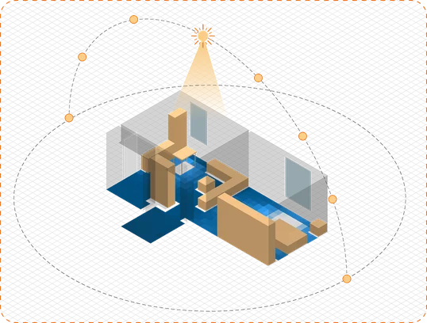
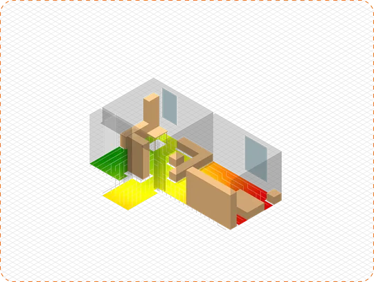
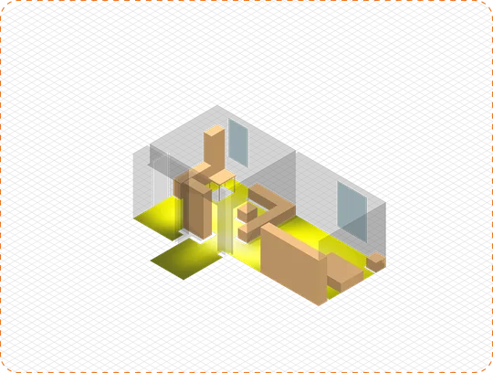
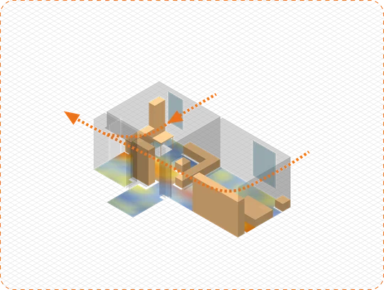
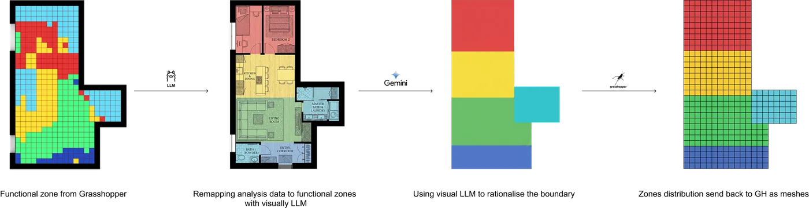
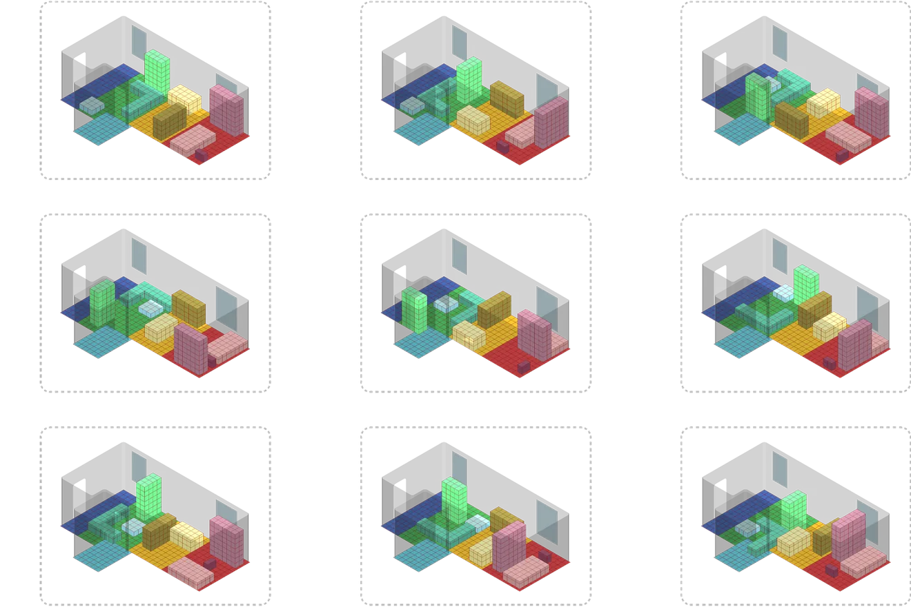
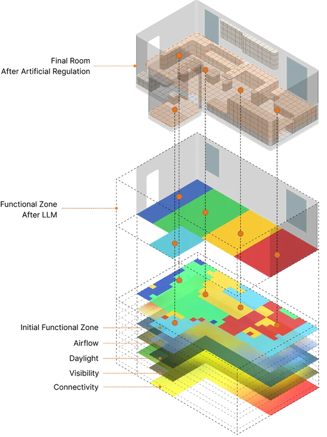
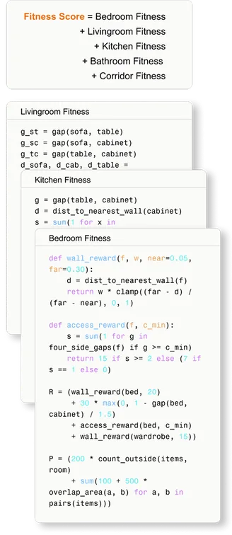

CORE SYSTEM
The Engine that
Plans the Room.
From a floor plan and a person, the system works out where each room should go, how
the furniture should stand, and whether the result truly serves its resident. It tests, plans,
places and then tests again.
01 — GENERATIVE WORKFLOW
1
User Profile
Needs, abilities,
daily routine
2
Performance
Analysis
Daylight · paths ·
views · airflow
3
Zone Division
LLM rationalises
the boundaries
4
Furniture &
Layout
Sized by standards,
placed by rules
5
Re-evaluation
Tested again,
scored out of 10
02 — PERFORMANCE ANALYSIS

DAYLIGHT
Simulated with Cyclops to find
the best-lit zones for each use.

CONNECTIVITY
Path lengths from every point
to every point: efficiency mapped.

VISIBILITY
What can be seen from where:
sightlines for orientation.

AIRFLOW
Ventilation effectiveness sets
where each room breathes best.
The four maps combine to give every room its best position: bedroom, living room, kitchen, corridor, bathroom.
03 — ZONE DIVISION WITH LLM

Grasshopper proposes the functional zones; a visual LLM
rationalises their boundaries; the result returns to GH as
meshes. Geometry stays computational, judgement gets
semantic.
04 — LAYOUT GENERATION
The LLM sizes furniture to formal standards for each room,
then places it inside the zones by the design rules. A pool of
candidate layouts is generated, ready to be scored.



05 — BEFORE VS AFTER
The same room, re-tested after generation. Before: furniture blocks the wheelchair turning radius, so the layout fails outright.
BEFORE
0
Furniture and aisle spacing fail the Ø1500 wheelchair turning radius. No mobility support anywhere in the plan.
AFTER
8.1
Spacing reworked for wheelchair access throughout; support surfaces follow the main route. Full score = 10.
The engine does not stop at generating a room. It proves the room works, in numbers.